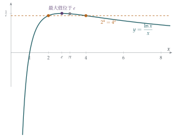

STEP II 2013，第 1 题
继续之前，请先阅读题目（原题为英文）。题目载于 STEP Support Programme 的题目资料库： step.maths.org/questions/13-s2-q1
引子
\(\pi^e\) 和 \(e^\pi\)，哪一个较大？计算机一秒钟就能告诉你：\(e^\pi \approx 23.14\) 而 \(\pi^e \approx 22.46\)。但计算机只告诉你结果是这样，却没有告诉你为甚么，更无法一次过解答无穷多条同类的问题。\(3^\pi\) 比 \(\pi^3\) 大吗？除了显而易见的 \(n = m\) 之外，还有没有整数满足 \(n^m = m^n\)？
原来这些问题全都关乎同一条曲线 \(y = \ln x\)，以及与它相交的直线。本题说明，只要运用得当，一幅草图就能解决一些单靠代数看似无从入手的大小比较，也说明 \(e\) 这个数怎样自然而然地成为分界点。
动笔之前
取对数（logarithm）后，\(a^b = b^a\) 等同于 \(b\ln a = a\ln b\)。试把这条式重新整理，使 \(a\) 只出现在一边，\(b\) 只出现在另一边。
\(b\ln a = a\ln b\) 等同于 \[\frac{\ln a}{a} = \frac{\ln b}{b}.\] 因此，每次比较 \(a^b\) 与 \(b^a\)，其实都是比较同一个函数 \(h(x) = \frac{\ln x}{x}\) 在 \(a\) 和 \(b\) 两处的值。而 \(\frac{\ln a}{a}\) 正是由原点（origin）连到曲线 \(y = \ln x\) 上的点 \((a, \ln a)\) 的直线的斜率（gradient）。这就是本题与直线有关的原因。
逐步解题
阶段 1 通过原点的切线
若 \(y = mx\) 与 \(y = \ln x\) 在 \(x = x_0\) 处相切，哪两条方程必须成立？
直线与曲线必须相交，即 \(mx_0 = \ln x_0\)，而且斜率相同，即 \(m = 1/x_0\)。把第二式代入第一式，得 \(1 = \ln x_0\)，所以 \(x_0 = e\) 及 \(m = 1/e\)。由原点引出的切线（tangent）与曲线相切于 \((e, 1)\)。
若 \(y = mx\) 改为与曲线相交于 \(x = a\) 和 \(x = b\)，则 \(\ln a = ma\) 及 \(\ln b = mb\)，所以 \(\frac{\ln a}{a} = m = \frac{\ln b}{b}\)，由此得 \(b\ln a = a\ln b\)，因而 \(a^b = b^a\)。■
至于草图：一条通过原点、比切线稍为平坦的直线会与曲线相交两次，切点两侧各一次，所以 \(a < e < b\)。斜率大于 \(1/e\) 的直线则完全碰不到曲线，因为 \(\ln x\) 是凹（concave）函数，整条曲线都在其切线 \(y = x/e\) 之下。
阶段 2 与 \(y\) 轴相交于原点上方的直线
现在直线是 \(y = mx + c\)，其中 \(c > 0\)。试以 \(m\) 和 \(c\) 表示 \(\frac{\ln p}{p}\) 和 \(\frac{\ln q}{q}\)。
由 \(\ln p = mp + c\) 及 \(\ln q = mq + c\)，得 \[\frac{\ln p}{p} = m + \frac{c}{p}, \qquad \frac{\ln q}{q} = m + \frac{c}{q}.\] 由于 \(c > 0\) 且 \(p < q\)，可知 \(\frac{c}{p} > \frac{c}{q}\)，所以 \(\frac{\ln p}{p} > \frac{\ln q}{q}\)。两边乘以 \(pq > 0\)，得 \(q\ln p > p\ln q\)，因此 \(p^q > q^p\)。■
从几何角度看：若通过 \((p, \ln p)\) 和 \((q, \ln q)\) 两点的直线与 \(y\) 轴相交于原点上方，那么从原点望去，前一点的仰角比后一点的更陡。
阶段 3 \(e\) 右方的弦
设 \(e \leq p < q\)。由 \((p, \ln p)\) 连到 \((q, \ln q)\) 的弦（chord），其斜率小于曲线在 \(p\) 处的斜率。为甚么？又为甚么这样会令它的 \(y\) 截距（intercept）为正数？
因为 \(\ln x\) 是凹函数，它的斜率 \(1/x\) 递减，所以由 \(p\) 到 \(q\) 的弦比 \(p\) 处的切线平坦：弦的斜率 \(s\) 满足 \(s < \frac1p\)。弦的 \(y\) 截距是 \[c = \ln p - sp > \ln p - \frac{1}{p} \cdot p = \ln p - 1 \geq 0,\] 当中用到 \(p \geq e\)。所以这条弦与 \(y\) 轴相交于原点上方。■
利用这个结果和第 2 阶段，判断 \(\pi^e\) 与 \(e^\pi\) 哪一个较大。
取 \(p = e\) 及 \(q = \pi\)。连接这两点的弦的截距为正数，所以根据第 2 阶段，\(p^q > q^p\)，即 \[e^\pi > \pi^e.\]
阶段 4 与切线平行的弦
现在假设由 \(p\) 到 \(q\) 的弦的斜率刚好是 \(\frac1e\)，与切线 \(y = \frac{x}{e}\) 的斜率相同。
这条弦与 \((e, 1)\) 处的切线平行。由于 \(\ln x\) 是凹函数，曲线位于该切线之下。这条弦与 \(y\) 轴相交于原点的上方还是下方？
这条弦是直线 \(y = \frac{x}{e} + c\)，其中 \(c\) 为某个常数。它的两个端点都在曲线上，而曲线位于切线 \(y = \frac{x}{e}\) 上或其下方，并且只在 \(x = e\) 处与切线相接。两个端点不可能同时位于 \(x = e\)，所以最少有一个端点严格位于切线下方，于是整条平行的弦都在切线之下：\(c < 0\)。现在以 \(c < 0\) 重做第 2 阶段：不等式的方向反转，\(\frac{\ln p}{p} < \frac{\ln q}{q}\)，因此 \(q^p > p^q\)。■
回顾
化为单一函数。比较 \(a^b\) 与 \(b^a\)，变成了比较 \(h(a)\) 与 \(h(b)\)，其中 \(h(x) = \frac{\ln x}{x}\)。
有理有据的草图。每一处“藉草图说明”的背后，都有确切的事实支持：\(\ln\) 的凹性（弦在曲线之下，切线在曲线之上），以及截距的正负。
\(e\) 的特殊角色。由原点引出的切线在 \(x = e\) 处与曲线相切，而这一点正是以上所有比较的分界点。
背后的数学
本题的一切，都可以在 \(h(x) = \frac{\ln x}{x}\) 的图像中看到（图 3.5.1）。它的导数（derivative）是 \(h'(x) = \frac{1 - \ln x}{x^2}\)，所以 \(h\) 在 \((0, e)\) 上递增，在 \(x = e\) 处达到最大值（maximum）\(\frac1e\)，然后递减并趋向 \(0\)。一条高度为 \(m\) 的水平线，若高度介乎 \(0\) 与 \(\frac1e\) 之间，便会与图像相交两次，交点为 \(a < e < b\)，且 \(h(a) = h(b)\)，这正正就是 \(a^b = b^a\)。在 \(e\) 的右方，\(h\) 递减，所以当 \(e \leq p < q\) 时，我们有 \(h(p) > h(q)\)，即 \(p^q > q^p\)。特别地，\(e^\pi > \pi^e\)；更一般而言，对每个 \(x \neq e\) 都有 \(e^x > x^e\)：在这场较量中，没有其他数能胜过 \(e\)。

\(x^y = y^x\) 的所有解
哪些相异的正实数对满足 \(x^y = y^x\)？有一个巧妙的方法可以把它们全部找出来。设 \(y = tx\)，其中 \(t > 1\)；那么 \(x^{tx} = (tx)^x\) 给出 \(x^t = tx\)，所以 \(x^{t-1} = t\)，并且 \[x = t^{1/(t-1)}, \qquad y = t^{t/(t-1)}.\] 写成 \(t = 1 + \frac1n\)，便得 \(x = \left(1 + \frac1n\right)^n\) 及 \(y = \left(1 + \frac1n\right)^{n+1}\)。取 \(n = 1\) 时，这就是 \((2, 4)\)；取 \(n = 2\) 时则是 \(\left(\frac94, \frac{27}{8}\right)\)，而的确有 \(\left(\frac94\right)^{27/8} = \left(\frac{27}{8}\right)^{9/4}\)。当 \(n \to \infty\) 时，两者都趋向 \(e\)，也就是两个分支会合之处。1728 年，丹尼尔·伯努利（Daniel Bernoulli）与哥德巴赫（Christian Goldbach）曾在书信中讨论这个问题，其后欧拉（Euler）亦有研究。
最经济的底
函数 \(x^{1/x} = e^{h(x)}\) 同样在 \(x = e\) 处取得最大值。这解答了一个有趣的问题：假如一个记数系统的“成本”是它的底（base）乘以所需的数位数目，那么最经济的底就是 \(e\)；若只考虑整数，则是 \(3\)（仅仅胜过 \(2\)）。有少数实验性质的电脑采用过以 \(3\) 为底的记数法，例如 1958 年苏联的 Setun。
思维技巧
一条不等式或方程，若当中两个量纠缠在一起，往往可以化为关于同一个函数在两点取值的命题。
一旦找到这个函数，它的图像（在哪里递增、在哪里递减、在哪里达到顶点）就能一次过回答所有问题。在这里，\(a^b\) 与 \(b^a\) 的比较变成了 \(h(a)\) 与 \(h(b)\) 的比较。
延伸练习
整数。试做 STEP I 1988，第 1 题。
更多比较。试做 STEP II 2025，第 3 题 （载于 OCR 提供下载的 2025 年试卷 zip 文件内）。该题利用本节的图像，解决更多 \(a^b\) 与 \(b^a\) 之间的比较，其中一个要靠 \(e\) 的数值界限才能完成。
一行证明。利用当 \(x \neq 0\) 时 \(e^x > 1 + x\)，并取 \(x = \frac{\pi}{e} - 1\)，直接证明 \(e^\pi > \pi^e\)。
延伸阅读
Eli Maor, e: The Story of a Number（Princeton University Press）。讲述 \(e\) 的历史，包括方程 \(x^y = y^x\)。
Paul Nahin, An Imaginary Tale（Princeton University Press）。不只谈 \(\sqrt{-1}\)：书中满载正是这一类的有趣计算。
Michael Spivak, Calculus（Cambridge University Press）。第 11 章以完全严谨的方式，讲解如何运用导数了解图像的形状。